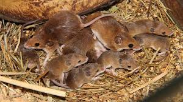

Длина тела поливой мыши достигает до 12,5 см, хвоста — около 70 % от длины тела. Окраска спины — охристо-сероватая, брюшной стороны тела — светло-серая. Вдоль спины проходит тёмная полоса, чем отличается от домовых мышей, у которых окрас обычно более тёмный.
Полевые мыши, обитающие во влажных и затопляемых биотопах, строят гнезда на кустарниках или в траве. Питается как растительной (семена, ягоды, зеленые части растений), так и животной (насекомые) пищей. Состав рациона зависит от времени года.
